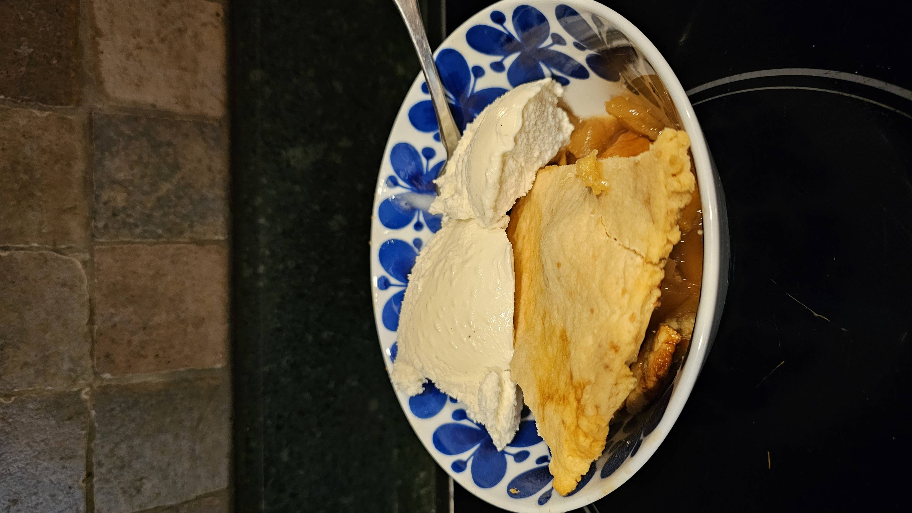
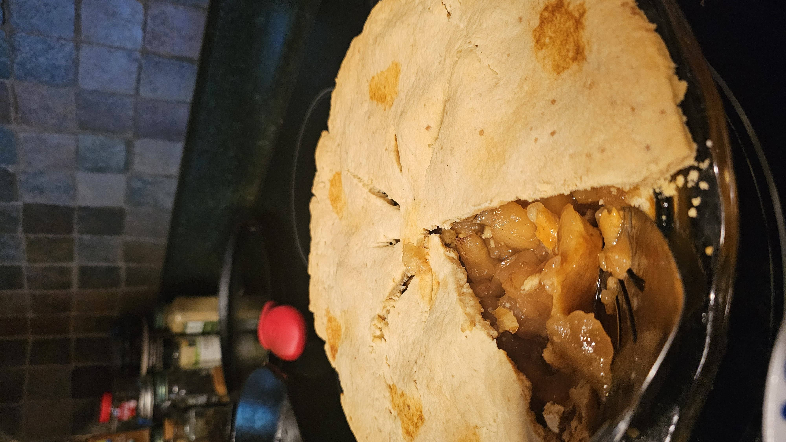

Image source: Marek S.
Why is this important to my family
My Mom's family has passed down recipes for a very long time. In recent generations, these recipes have been written down and one of these is the apple pie. This popular fall desert has our own style and taste.
Family Quote
"This is the recipe from 1954's Better Homes and Gardens Cookbook that I grew up eating."
-Mom
Steps and Instructions For 9" Double-Crust Pie
| Ingredients | Measurements |
|---|---|
| Flour | 2 cups |
| Salt | 1 tsp |
| Ice Water | 4 Tbs |
| Butter | 14 Tbs |
| Sliced Apples | 4 cups |
| Cinnamon or Nutmeg | 1 tsp |
| Sugar | 3/4 to 1 cup |
- First gather all ingredients for the crust
- 2 cups flour
- 1 tsp salt
- 2/3 cup + around 2 Tbs butter
- 4 Tbs ice water
- Pre-heat oven to 350°F
- Measure out all ingredients into a bowl and slowly add water
- Make a second round of dough for a double crust
- After the dough is mixed, press out the crust into a 9" pie dish
- Bake for 10 min until light brown
- Silicon crust protectors can be used to prevent burning especially on the second time in the oven
- Then gather all of your ingredients for the filling
- 3/4 to 1 cup sugar
- 1 tsp cinnamon or nutmeg
- 6 to 7 cups sliced apples
- 1 1/2 Tbs butter
- Peel skin off apples (optional)
- Mix in all ingrediants into a bowl and add a squeeze of lime juice
- Pour filling into pie and place the second layer of crust on top
- Finally, bake on 350 for 1 hour or until light golden
Tips and Tricks
- Substitute lard for some of the butter to achieve an flaky crust
- Rolling out the top crust with a roller makes it more even
- Sometimes cooking the filling in a pot before putting it in the pie is a quicker option